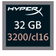

Presentació
Sóc Ethan Martí, Tècnic Informàtic i estudiant d'Animació 3D, Jocs i Entorns Interactius.
Pel que fa al primer títol, aquest només significa la finalització dels estudis de Sistemes microinformàtics i xarxes amb els quals podria tenir més o menys nivell, però puc assegurar que el meu nivell és molt alt, en aquest nivell almenys i sobretot en tasques que poden costar moltíssim a algú de nivell usuari, també puc improvisar molt fàcilment per l'alta experiència que tinc en el tracte amb ordinadors i qualsevol aparell informàtic, si em preguntessis quan vaig començar a passar pràcticament tot el dia amb un ordinador, probablement em costaria trobar una resposta, ja que se'n del 2000 pràcticament vaig créixer apegat al teclat de manera exagerada (per posar context, la majoria de gent del 99-01 amb la que inclús vaig estudiar aquest cicle, no coneixien coses com el Messenger de Microsoft, Emule, HDD's IDE o no havien tocat pràcticament el Windows XP o Vista, dos sistemes operatius amb els quals pràcticament vaig créixer), així que crec poder ser útil en qualsevol empresa que requereixi un mínim nivell informàtic.
Pel que fa als meus estudis actuals, la meva motivació no es molt alta ja que no ho he sentit com algo passional, encara així, la majoria de treballs que he ficat com a mostres tenen com a molt entre 2 dies i una semana de treball i gracies, crec que on tinc més coneixement que aplicar és en la creació de webs, tinc un alt coneixement en la edició de html's i arxius css, se com funciona Wordpress, Prestashop i molts de plugins que s'utilitzen actualment a molts llocs web, tambe tinc un minim de coneixement amb javascript (encara que molt inferior als altres dos), un altra cosa que s'em dona bé es la edició de fotografies o edició gràfica, baix ficare algun exemple actual i algun exemple vell, ja que porto molt desconectat de la edició desde 2015-16, així que probablement ficare algun treball actual amb algun treball de 2014, crec que aprenc rapid i la veritat es que m'entreteneixo bastant i se admetre i arreglar els errors de la edició.
Després tenim animació 2D i 3D, crec que no li he dedicat el temps que tindria i per tant el que he fet s'ha vist afectat pel poc temps dedicat, la majoria d'animacions 2D estan fetes amb 1 dia o 2, mentre que les 3D fins al moment les he fet amb poques hores. (Aniré actualitzant el demoreel i les mostres)
Respecte a modelatge no tinc molt d'interès, he fet el demanat a classe i he sigut molt regular sobretot amb texturització i rigging.
i per finalitzar tenim disseny de videojocs amb Unity i Javascript, quant a això (actualitzar part de Unity), crec que no sóc dolent programant amb JS i entenc el codi relativament fàcil, però no ho aguanto i per tant m'agradaria evitar-ho si puc. Per altra banda el més interessant aquí han sigut els moments de fer anàlissis i debati sobre temes, el qual gaudeixo moltíssim i crec que no se'm dóna malament, tinc molta experiència amb el camp videojocs, jugant i fen de "gamemaster" a jocs com World of Warcraft (servidors privats, en cas de voler saber quins contacter per privat) o Minecraft i he tingut molt de contacte amb persones de gran importància (en els servidors privats de Warcraft), també gràcies a això tinc experiència amb el tracte al client.
Bé, crec que això faria un resum, com a detalls dir que, no tinc el carnet de conduir, he fet pràctiques ja a 2 llocs (Batxillerat i Cicle) en el primer cas pràctiques d'economia amb un electricista autònom, i en el segon cas fen de tècnic informàtic al INS Montsià a Amposta (43870)
Encara que amb aquesta descripció pugui parèixer un poc desmotivat en els estudis actuals, puc prometre un 100% d'esforç i professionalitat en l'estada a l'empresa i dir que ho donaria tot per quedar contents les dues bandes com ja he fet en les meves anteriors pràctiques, crec que la meva actitud en el treball ha de ser professional i adherir-se al lloc en el qual estigui.
I fins aquí la bíblia que he muntat, passem a les eines que puc utilitzar i les mostres.
Eines

Powered by
